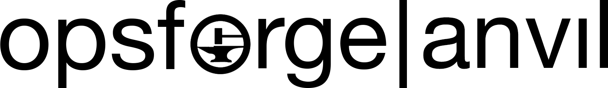
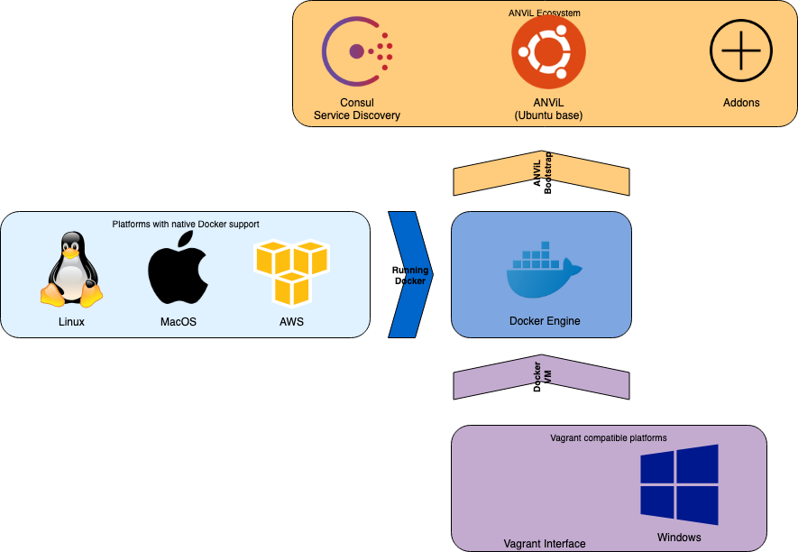

ANViL is a DevOps toolkit and ecosystem that aims to enable engineers to have a consistent development environment on any platform and any system. It's meant to serve as a swiss army knife for most DevOps tasks, like automation, testing, scripting, etc. It achieves this by packing a lot of the most popular tools, but it doesn't stop there.
Summary / Guidelines
The opsforge anvil (a renaming of the opsforge stack 2.0) is an all-in-one development solution, that aims to deliver a development platform that is:
- using browser accessible web-apps (no terminal emulator or IDE needed / even on Windows)
- built on docker-native and container-based services
- structured and configured by docker-compose
- relying on OSS-only components
- swarm-compatible for scale-out needs (e.g larger dev environments)
- has in-built logging and audit (for collaboration and record keeping)
- highly customisable (modular)
- easly reproducable and replacable
- version controlled
- platform and infrastructure agnostic
- can run on localhost and AWS the same way
Architecture
ANViL runs on top of the Community Edition of Docker Engine. It can also run on Docker EE, although it's not required. It's also able to run on Kubernetes, however there are limitations in K8S related to disk mounting that have some impact on the functionality, so it's not officially supported.
The project uses a simple shell script as a CLI to manage the required components. The shell script interacts with the docker engine of the host using the docker-compose Python library.
This library is widely adopted and popular so extensive documentation is available for it, making the addition and editing of addons easier. Using compose, it stands up docker containers
running the ANViL ecosystem.
The minimum configuration is running ANViL and Consul. The addons are optional, but some of them are strongly recommended for optimal experience, like the Cloud9 IDE.
All adopted services will be registered in service discovery within Consul. It's a free Hashicorp product that provides the aforementioned service discovery along with health checking the services. It's useful to give a birds-eye view from all running services within ANViL, but it's also helpful to find URLs or to code deeper automation mechanisms between services within ANViL.
As mentioned, ANViL runs on Docker Engine. This pertains, that whatever can run Docker Engine, can in turn run Docker. Natively supported are:
- MacOS (preferred)
- Linux (just as good, but less desktop tools are available)
- AWS (using ECS or a Linux EC2 instance)
- Azure
- GCP
- ..etc
The constraint for native support is to be able to run Docker Engine.
There's also a compatibility mode available using Vagrant. It moves the platform abstraction one layer below and instead requiring the ability to run Docker natively on the host, it creates a VM on the host that can run Docker. The reason why this isn't the preferred / optimal usage is because the maintenance and understanding the VM requires. There's also the factor of the resource locks the VM receives from the host instead of sharing the resources. However this mode enables engineers to run ANViL 'behind enemy lines' so to speak, whereas anything that has the ability to run VT-d / VT-x or equivalent becomes a viable platform (including legacy OSes). Using Vagrant ensures that wherever Vagrant can run on whichever virtualization product, the UX will be the same. It's also a lot quicker to stand up the VM using Vagrant.
Here's an overview of the architecture:
